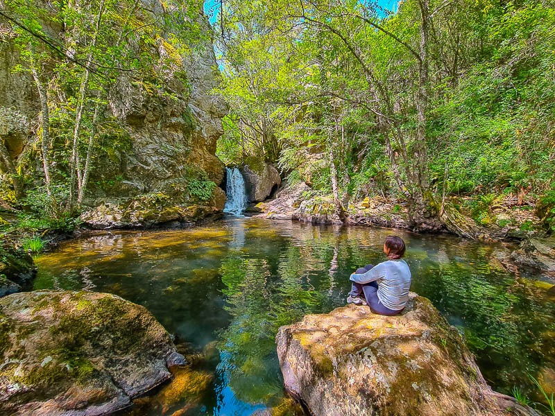
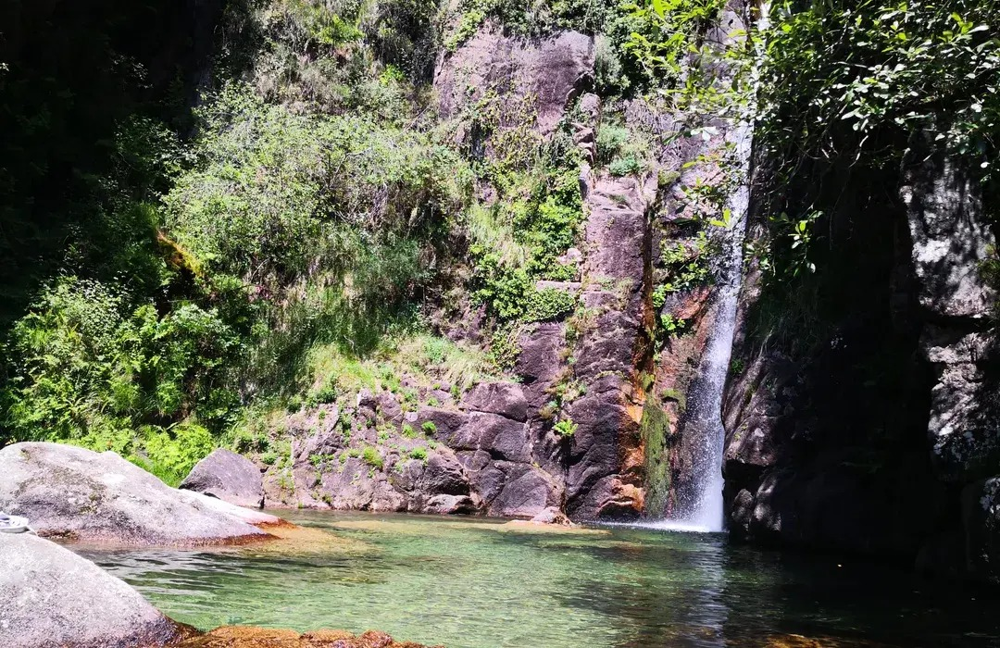
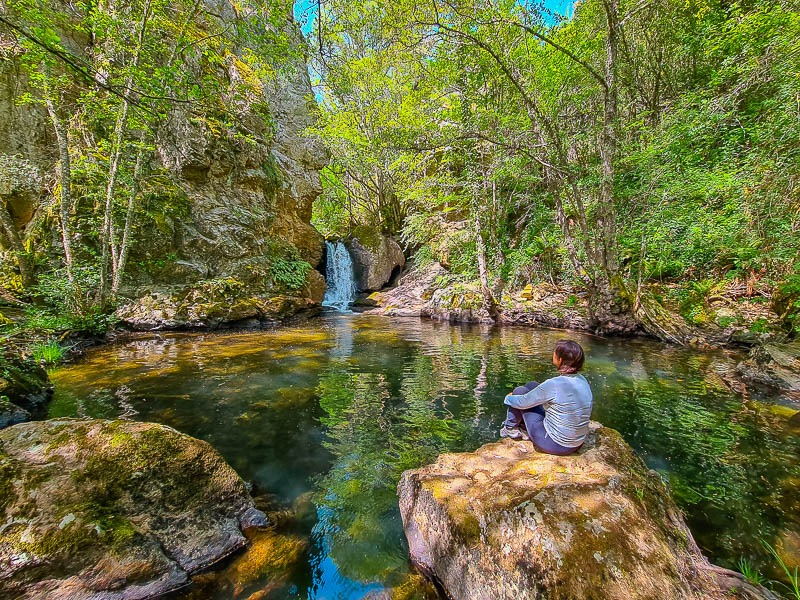
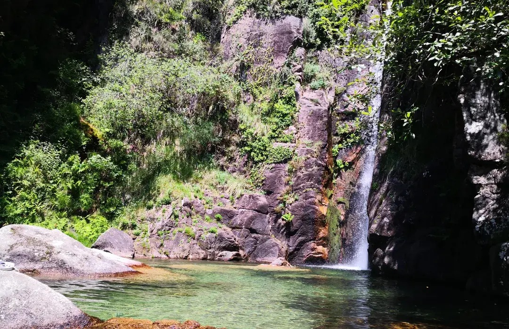
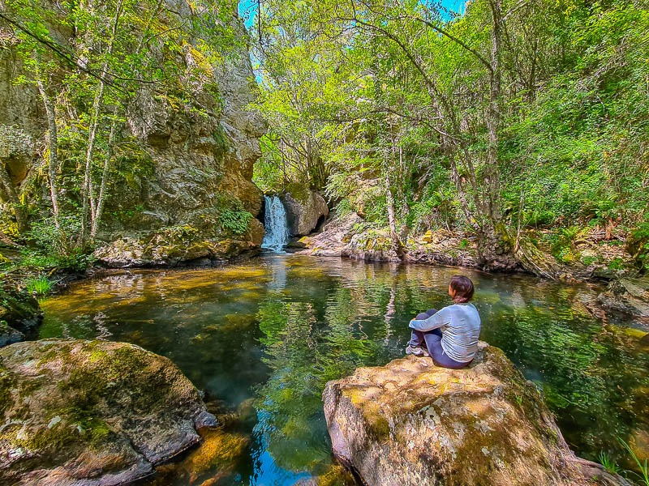
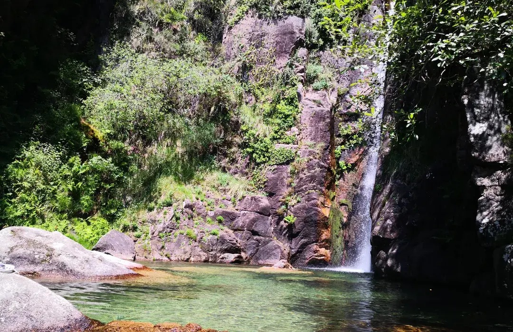

Início > Sobre Nós
Atuamos todos os dias para assegurar que o património natural e histórico se mantém intacto e acessível para as futuras gerações. Através da tecnologia, educação e ação no terreno, construímos um legado de proteção ambiental e cultural.
Saber MaisAuditorias
Ocorrências resolvidas
Tempo médio de resposta
Satisfação dos visitantes


As nossas principais competências aplicadas à preservação do património:
Acompanhamento em tempo real com sensores, rondas de vigilância e relatórios de campo para identificar riscos precocemente.
Promovemos ações educativas junto de escolas, visitantes e comunidades locais, despertando interesse e respeito pelo património.
Limpeza, manutenção preventiva e restauro de locais históricos e naturais, assegurando a sua preservação.
Avaliações estruturais e técnicas em monumentos e trilhos para garantir segurança, estabilidade e acessibilidade.
Plataformas digitais, sensores inteligentes e dashboards interativos para análise e gestão em tempo real.
O que dizem aqueles que já colaboraram na conservação do nosso trabalho:
A EyesEverywhere foi essencial na preservação de locais turísticos importantes, garantindo a sua conservação para futuras gerações.
Excelente trabalho de proteção ambiental e informação ao visitante!
Conseguiram salvar uma ponte histórica que já estava esquecida.